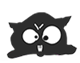

Беспощадная борьба со светом, бобром и мышами
Настроить шрифт всё никак не выходило. Плюнув, он открыл Ворд и начал печатать. Однако, буквы выходили необычно кривыми, строки скакали, запятые убегали со своих мест.
- Съёшь ещё этих мягкий французких булок, съешь, блядь, говорю я – мягкое меццо-сопрано пропело из динамиков
- !??!! – подскочил креативный директор. - НАДО НАРИСОВАТЬ ЗВУК!!!1 -->
Blockquote> Blockquote Блокквоте блоквота чойта ж такое то
кОДЕ колде выамшо швыагп
ПРЕ пре это проеелоатло
Основная задача проекта – порабощение мира, подчинение людёв своим интересам, а также служение цели воплощения чорного перманентного потёмка. Поставленные задачи будут достигнуты, цели будут выполнены. Несогласные разжалованы. Согласные отменены. Количество гласных будет увеличено, в том числе за счет добавления новых букв в алфавит. Всем бояться и раболепствовать!
